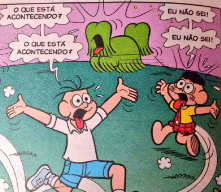

Quem sou eu, Onde estou
Sou Tiago Custódio. Apaixonado por ciência, tecnologia, história e filosofia. Curioso sobre tudo o que nos cerca.
Curiosidade Interessante (!!!)
Além de trabalhar como programador, já fui professor de História por quase dez anos.